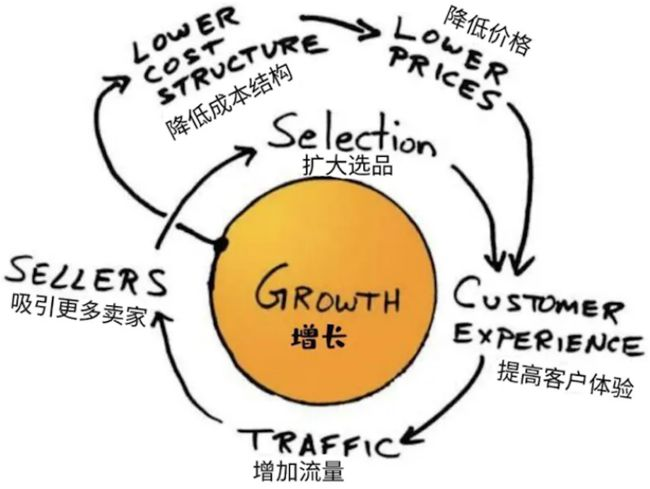

![QRCode]()
- 复制亚马逊的准则未必能够复制亚马逊的创新文化。复制文化并不能习得文化，通过践行文化拿到结果，才能习得文化。
- “我们坚信，股东的长期利益与客户利益完全一致”亚马逊企业文化的四方面描述：“顾客至尚”（Obsess Over Customers），“长期主义”（It’s All About the Long Term），“我们将继续同时从成功和失败中学习”（We will continue to learn from both our successes and our failures），“卓越运营”（Operational Excellence”）。
- 一家企业发展过程中有一些至关重要的时刻，一定要被经历，企业才能壮大起来。
- 学习亚马逊的逆向工作法，就是在经营框架搭建和业务日常管理中更多地关注可控输入指标（controllable input metrics）：在哪里收集这些指标？在哪里汇总这些指标？在哪里探讨这些指标？怎么归因这些问题？怎么优化这些指标？
从指标推导经营框架的逻辑
- 结果指标意味着结果。
- 过程指标意味着中间可控。
- 原因指标意味着原因可控。
- 结果指标是有限的，中间指标是有限，影响力从大到小排序的。
- 那么控制这些中间指标的能力就是我们的核心能力，核心能力的排序应该参考影响力的排序（当然也应该考虑建设这些能力的 ROI）。
- 不要把中间指标当作原因指标。
业务模式的选择，决定了关键指标的多寡，和对指标的要求。价值链全环节的指标多，短环节的指标少。根据 STP 理论，我们的 segmentation 越小，我们做事情的难度可能也越小。
关注输入指标更多是一个理念，既可用于独立业务管理，也可用于部门、项目、个人的工作管理。可控的输入指标能让人更早地发现关键的信号，是更清晰的行动指南。而输出指标是输入指标影响下的结果，滞后、不直接可控、只显示结果而无法揭示原因。
虽然逆向工作法中强调“对可控输入指标的关注在任何层级都适用，不论哪个层级的管理者，从个人贡献者到CEO，都要详细了解并高度聚焦输入指标”，但亚马逊达到这种状态（如果是的话）也是经过了与之配套的漫长的时间投入和庞大的管理精力投入的。运动式的学习并不值得鼓励：深切领会和熟练运用输入指标并不容易，全面、猛然转向有可能出现“学走样”、“影响原有经营框架稳定性和业务动作延续性”的风险。
关注输入指标也不应仅停留在定义、监控乃至分析层面，而应该融入日常的业务管理和经营动作当中，融入OKR、绩效等管理工具当中，切实有效地改善输入指标。
如何找出这些指标？高手可以看出量变引起质变的东西。做业务模式有可能存在两种方法：
- 先建立经营框架，然后通过迭代指标，寻找对业务本质的理解。
- 先找到对业务本质的理解，然后梳理指标，依托指标建立经营框架，通过框架迭代运营，逼近商业本质的最优结果，或者迭代我们对商业本质的理解。
如果把 1 和 2 串起来，我们会发现它也可以组成一种增长飞轮。
指标的分类
输出指标
输出指标实际上是商业目标，是商家自身关心的，需要在长期商业活动里达成的目标。在亚马逊的增长飞轮里，输出指标只有一个，就是增长 Growth。
输出 指标应该保持关注，但不应该只关注 输出 指标的波动和归因。归因不只是从数学视角看，也要考虑一些对根因的理解（能从量变看出质变来）。
输入指标
在亚马逊的输入指标里面，一个指标会驱动另一个指标，几个循环应该是：
- Selection（选品） -> Customer Experience -> Traffic（这里是流量的意思） -> Sellers -> Selection
- Growth -> Lower Cost Structure -> Lower Prices -> Customer Experience
可以看出这个指标里飞轮的存在甚至可以让输出指标驱动输入指标。
增长可以解决成本的问题，优化价格又会带来更好的客户体验。所以长期主义本身是资本主义扩大化再生产的玩法。
相比输出指标，输入指标往往是更以客户为中心的。比如在零售中，用户会关心低价、更多商品选择、商品有货且能快速收货、能快速在App上找到所需商品、客服人员的服务效率，这些就是好的输入指标。用户不会关心公司的收入、客户数等，这些是输出指标。著名的“亚马逊飞轮”其实是在零售行业中输入指标和输出指标关系的集中体现：在一个闭环的体系内，一组可控的输入指标驱动了一个关键的输出指标（增长），强化任意一个输入指标，都能让飞轮转得更快。更好的客户体验-更多流量-更多卖家-更广选品-更好的客户体验，这个闭环驱动了增长，进而降低了成本，带来更低价格，从而提升客户体验。

可以看出亚马逊的增长飞轮只选取了 6 个输入指标，围绕一个输出指标转。
我们对输入指标的监控应该考虑输入指标对输出指标的作用周期可能会很长的问题（对于一些输入指标的持续关注和改善往往需要一些信念，这些信念通常来自于对用户价值的理解和追求），独立地监控、改善输入指标和独立地监控、改善输出指标，是同样重要的。
输入指标不能被简单地理解为过程指标，更恰当的类比是“原因指标”（输出是果，输入是因）。如果一定要跟过程指标联系的话，这里的过程应该指的是价值创造的过程，而不简单是用户转化过程、商品流通过程、数学加乘过程。在交易平台领域，比较典型的价值创造过程有：供给线上化、供给数字化、供给标准化、供给分级分类、用户连接、用户需求识别、用户需求表达、供给推荐/供需匹配、信用背书、风险分担、交易转化、履约交付、售后服务等等。
生活中输入指标的例子：多喝水，少熬夜，多读书。
第三种指标：观测型指标
观测型指标指的是那些对输出指标有较大影响、但并不可控的指标。团队观测第三类指标，一方面可以帮助解释输出指标的变化，一方面在外部环境发生变化时能快速反应。
应该慎重把握观测型的使用范围。面对某个指标，首先应当尝试弄清楚它是什么层级、什么重要度的输出或输入指标，而不是轻易地归为观测型指标。即使归为观测型指标，也应该明确观测目的和预警逻辑，有助于我们理解观测型指标背后的业务含义。观测型指标不是思考尚不充分的借口或缓冲区。
如何使用指标框架
亚马逊倡导，“不懈地聚焦于可控的输入指标（a relentless focus on input metrics），而非输出指标（output metrics）”。
对可控输入指标的关注在任何层级都适用，不论哪个层级的管理者，从个人贡献者到CEO，都要详细了解并高度聚焦输入指标，否则就无法正确认知和控制输出指标。正如亚马逊“Deliver Results”这条领导力原则所说，“领导者要聚焦于业务的关键输入指标，并保质保量地及时交付（leaders focus on the key inputs for their business and deliver them with the right quality and in a timely fashion）”。
可控输入指标不仅适用于成熟业务，对于新业务也是如此。亚马逊早期每个Two-pizza team成立时都需要跟S-Team开立项会，S-Team要确认团队有明确的目标（需要解决什么问题、有什么结果）、清晰的责任划分、明晰的进展衡量方式（选取哪些可控输入指标驱动团队达到目标、指标所需数据能否可靠地收集）。这个过程被称为instrumentation（工程词汇，指在自动化系统中建立起负责观测、衡量和控制的仪器和系统）。
第一步是定义输出指标、明确不同输出指标的目标和优先级，这一步容易被忽略，很多团队会直接从第二步甚至第三步开始。虽然输出指标通常比较有限，往往是围绕增长/规模、利润/盈亏的几个指标，但准确地定义它们、明确不同指标的合理目标和优先级往往是战略级问题。例如xx业务是“每天a单，每单赚x毛钱”还是“每天2a单，每单赚x块钱”，就是一个重要的战略选择。
第二步是定义客户。无需特别纠结某个群体是否是传统意义上的客户，还是回到输入指标的本质，如果这个群体的某个诉求是当下对于业务增长影响很关键的维度，就可以将其纳入输入指标的选取范围。
第三步是定义客户价值，无非是多快好省。注意，客户价值不是输出指标，也不是输入指标。输入指标是有排序的。
第四步是定义指标来衡量我们能在多大程度上满足第三步中的用户价值，这些指标往往就是一级输入指标。好的指标能够直接体现用户价值，有些指标难以获取，需要考虑成本问题，可以考虑替代方案，替代方案的精确性和有效性需要得到保证。比如我们算不出市占率出来，可以直接用自身规模来衡量一个业务。输入指标并不是从输出指标出发、做数学意义上的拆解产生的，但一定是对输出指标有最大影响的可控因素。建设收集所需数据的工具也要花不少时间精力，常常要从多个分散的系统里提取、处理、展示。这里不能妥协去降低标准，要做必要的投资，否则做业务就是在“盲飞”。深入地去看数据是怎么提取的有助于发现潜在问题。比如同样是衡量“有存货率（in-stock rate）”这个指标，你可以在每晚11点看一个截面数据，也可以看全天累计的数据，后者的数据收集成本显然更高，但它更准确地反映了客户在这一天中体验到的有存货情况，是更以客户为中心的（而不是数学拆解出来的）。
输入指标要做好分类、分层，尽量 MECE，考虑特定资源和组织能力的限制，输入指标不需要太多，但针对那些对输出指标影响很大的输入指标，不能有大类上的遗漏。
关注输入指标是一种实战心法，要在实操中跑通整个框架，清除 blocker。
按照亚马逊的定义-衡量-分析-改进-控制五步法(DMAIC)，国内的人容易做错的事情包括：
- 在衡量上偷工减料，没有办法去除噪声。
- 在分析上没有 dive deep，打破砂锅问到底。
- 在改进时盲动，在信息不完整的时候做不懂的事情。
- 不懂得只看异常，把正常指标的边界扩大，看数据不敏感。
正文札记
引言
亚马逊屡次处于失败的边缘，但屡次被拉起。Andy Jassy 原本是 AWS 的 ceo，现在是整个亚马逊的 ceo。
成为亚马逊人
Jeff 在 2015 年的致股东信中写道：“你当然可以轻易地用纸和笔写下公司的企业文化，但是这么做并不能创造一种企业文化。”好的企业文化是活动的，它活在在人的身上，不断地起着化学作用。学会亚马逊的文化，比直接加入亚马逊这家公司更容易成为亚马逊人（如果加入亚马逊而学不会这些东西，恐怕也不能算是亚马逊人）。亚马逊文化有不少东西是他们自己发明的，也有不少是从其他经营方法里学习来的，比如 dive deep 的可能就是从丰田的精益制造的 5 why 里来的。
亚马逊的历史创造了他们的文化、机制和领导力准则。亚马逊人很早就预见到了有些种子会长成参天大树。
贝索斯很看重客户信誉，认为一个坏的客户信誉抵得上数百个好的客户信誉。
领导力准则
历史性的增长导致了亚马逊需要建立一些机制，能够让公司从上到下贯彻创始人制定的标准。
如果要记住一些原则，而不是实践一些原则（如在日常工作中遵循高标准），这是公司文化没有融入公司的信号。
机制
使用机制来贯彻领导力准则：op1 和 op2，S-Team Goals。
亚马逊有大量的、详细的目标，产生运营规划OP1，然后在一个短周期里生成年度规划 OP2。
S-Team Goals 有三个特点：数量异常多、细节水平高、进取性强。亚马逊认为能够完成 S-Team Goals 的四分之三就可以了。
抬杆者
在招聘决策出现抬杆者之前，有出现野草般的扩张，新员工开始面试新员工是一个危险的信号。
录用相似的人会让团队视野狭隘，意见不充分，有可能招聘形形色色的人对团队来讲是好事。不合格的员工很快就会被同事识别出来。
一个好的招聘决策应该开会充分探讨信息，宝恒招聘决定正确。
单线程领导模型（Single Thread Leader）
让员工兼职工作，可能会让真正重要的、困难的初创业务始终得不到高优处理。
快速创新要求团队快速创新，如果给予团队非常大的权限，他们就可以摆脱依赖，足够敏捷，但这需要坚持高标准。
公司大了以后如果我们花更多时间协调，而不是更多时间创造，我们可能就不够敏捷。工程人员不再能够独立完成工作的时候，他们就需要依赖于其他团队了。如果一个团队需要一些东西，但它自己无法自己创造，它就需要花时间协同。
亚马逊流速最快的地方是一个 Obidos 的村庄，这个地方流速最快是因为它最窄。一个员工经常要高速输出一些东西，除了证明他能力强，也证明了他可能成为系统里一个潜在的瓶颈（系统亦如是）。我们需要优化这个瓶颈。
软件架构的紧密耦合（tightly-coupled）会导致快速冲刺变成套袋赛跑-每个团队的步调注定是不一致的，拖慢整个系统不可避免。
鼓励创新意味着我们应该消除沟通，而不是优化沟通-通过消除来优化。Jeff 鼓励系统通过系统接口来交谈而不是邮件和会议。
亚马逊早期通过 NPI 来优化依赖问题，但项目价值的评审挫伤了士气。士气也是生产力的一种。一间公司如果管理混乱，意味着人事和制度没有建立好。
two pizza team 是第一个回应方案，但后来被 STL 代替了，要求团队高度自治。SOA 是经过认真反思得到的结果，提供了架构上的隔离。任何人如果要从该隔离区域获得东西，必须通过 API 提出被明确记录的服务请求。微服务有个一个不被人注意的特点：负责人明确。
自治团队有以下特点：
- 团队目标明确。
- 职责界限清晰。
- 一致同意进展的衡量目标。
two pizza team 的特点：
- 规模小。
- 保持自治性。
- 通过定义明确的健康度函数（fitness function）。
- 实时监控。
- 成为业务负责人。这种范式转变要求团队对结果负责。
- 由拥有多领域技能的一流领导者带领。
- 独立的成本中心。
- 事先获得 S-Team 的批准。
为了快速行动，最好慢点开始-想清楚 70% 的问题再开始。
但 two pizza team 通常面对如下问题：
- 只有产品开发团队受复杂依赖关系的困扰，其他团队不适合 two pizza team。
- 出色的 two pizza team 领导人很难寻找。
- two pizza team 成功的精髓不在于团队足够小，而在于是否有一个适合的领导人带领团队专注工作。有时候人多是刚需。
一个团队是否有充分的自治权：是否依赖别的团队来推出新的功能。如果团队不够自治，需要把可以自治和重复的东西单拎出来-不要害怕重复。
亚马逊认真思考，而且花了很长的时间过了以后，确立了 NPI -> two pizza team -> STL 的制度，而且得出一个结论：在愿景上固执，在细节上灵活（be stubborn on the vision but flexible on the details）。
Six Pager
好的材料应该启发思考，而不是破坏思考，分散注意力（PPT 太容易分散注意力了）。
Six Pager 最长只有六页。
最重要的是想法，而不是演讲者。
阅读记叙文可以吸收更多信息。亚马逊要求领导者 dive deep，知道执行的非常多的细节，阅读记叙文可以在更深层次上更好地了解公司重要计划。
愚蠢的想法是遮掩不住的，说话不清楚只是因为想法混乱。想法是人话语的上限，极少数人拥有清晰的想法和恰如其分的表达（呈现）能力。
Jeff 有一种神奇的能力，他能读出别人读不出的东西。他假设他读到的每个句子都是错的，除非能证明它不是错的。他在质疑句子内容，而不是作者的动机。
逆向工作法
亚马逊的高管会深入研究新产品的功能。
新业务有不如老业务的地方，关键在于如何平衡长中短期的策略。要收集数据以确定经营策略。要花大量时间去思考整个业务，没有搞清楚一些事的做法是不被认可的。it’s all about ideas。
写 PR/FAQ 是为了首先从客户角度来看待这项业务，从公司的视角转变为客户视角是很不容易的，因为这需要客服公司的 ego。
写 PR/FAQ 的目的不是让你解释你所做的所有的优秀的工作，而是分享工作中提出来的思想。很多时候人们认为更多意味着更好-更详实的内容会意味着更好。限制篇幅会培养更好的思考者和沟通者。PR/FAQ 试图从客户痛点角度，来说明新的产品形态拥有几个更好的关键要素或者客户体验，进而可以获取成功。索尼的例子是，试图先建立一个对公司有益的业务/产品，然后强行把它当作一个能够满足客户需求的东西推出，最终就会失败。
大公司里，只有最优秀的人才能爬到顶端。“如果难题得到解决就能得到实质的价值，我们不应该担心遇到难题。”勇敢地面对困难，产生和评估伟大的想法是逆向工作法的真正好处。
管理输入而不是输出
Jeff 认为关注输出指标并不能经营好一间公司（因为无法控制这些指标）。关注错误的信号或者缺乏洞察真正业务趋势的能力。
如果管理得当，采取正确的行动会推动业务朝积极有意义和积极方向发展的行动。
密切关注业务
WBR 一定要全面看待业务。
指标生命周期
DMAIC 来源于六西格玛规范。它的最后一步往往被人所忽略，就是在 control 中只关注异常指标。流程时不时会失灵，所以 control 很重要。
在改进一个系统以前，要先理解输入为什么能影响输出。要不然更改输入，要不然更改系统本身。这非常重要，有时候一个系统的某些关键变量。
输出指标（如股价）对亚马逊一直都很重要，但亚马逊的领导者要一直能够理解输入指标。
不同 category 的指标不一定一样。发现一个指标以后，可能还会发现第二个更好的指标（比如指标还可以下钻，还可以聚合，还可以从其他维度得到另一种指标。在同一个时间周期里，用不同的视角来看同一个问题，会产生不同的指标），我们要沿着思考的延长线推理，而且勇于迭代。而且要相信自己会犯错，要反复试错。一个团队要相信建立 instrumentation 的意义。
DMAIC 具有很强的可扩展性，你的投入水平应与你拥有的资源匹配。
测量数据的时候，很容易被偏见所误导，想要成功，想要表达成功是人的天性。报告无偏的真相至关重要，寻求真相的态度应该渗透到团队的每一部分。在亚马逊，财务团队的使命就是报告无偏见的真相，逆向工作法其实就是寻求真相的过程。不恰当的输入指标会导致不恰当的输出指标，无法实事求是地做决策。
要重分析，要相信真正的问题根因不隐藏在当前这个答案里，一个藏得很深的问题实际上需要问好几层问题才能问到真正好的答案。要相信 5 why 的力量。通常当天能够得到的答案不一定是好答案。
DMAIC 是一个小循环，这里面的逻辑框架是重要的。
WBR 有一个特点，就是不同的业务特点带来不同的业务模型。在订单层面和系统指标层面上要关注的数据是不一样的。但要相信业务里总是存在不变的东西要关注的。
好的资料使用一致的格式。人们总是喜欢谈论自己的领域，但我们要关注差异，而不是把时间浪费在（讨论我们已经）达成预期上。
把数据呈交 WBR 以前应当先看看，正确分析、归因。
我们应当创造一个让人们谈到自己领域中出现的问题，不会害怕的环境。坦诚错误应该是个让所有人学习经验的机会，勇于承担很重要。不要掩盖错误。
输出指标远不如输入指标能反应趋势原因。当时局与传闻不一致时持怀疑态度。
关于边际利润（Contribution Profit CP）可以说明异常报告的形式。
很多公司都在学习丰田，来应对复杂公司业务流程里的问题。
以前亚马逊的领导力原则要求领导者大多数的时候决定是对的，但也承认自己会犯错。坦诚沟通的目的是为了“赢得信任”。领导者不要怕自己难堪。
证据表明，惩罚性环境会留下不可磨灭的印记。
在亚马逊，了解指标的正常范围是指标所有者的责任。
发明机器
要发明你必须进行实验，如果你事先知道它是可行的，那就不是实验了。要允许失败，在实践中成功。
要 think long term。很多时候我们要真正解决客户需求需要很长的时间，我们要认识到提升客户体验需要很久很久的时间，要花笨功夫。但这东西就像数字石油，如果钻出来，回报很丰富。
许多公司会放弃在短期内不可获取回报的计划。如果没有预算，就不要发明，如果预算有限，那么保持耐心和足够节俭也可以成功发明一些东西。
有时候发明是为了实现一些差异化的东西，昨天不能做的事情，今天也许就能做了，这时候发明的时间就到了。技能导向的公司通常寻找与现有技术和能力完全匹配的新商业机会（技能导向的公司实际上是在寻求局部最优解，全局的最优解、长期的最优解可能并不是这样推导出来的），但这是从公司的视角出发，而不是从客户的需求出发。
Fire Phone 是一款生不逢时的手机。这提醒我们，PR/FAQ 能提供成功几率，但并不能保证成功。
要保证创新要能容忍失败，双向门和单向门都要用，不过单向门要慎重。
高管要学会看财务报表，财务报表才会反映真实情况。
在小业务上负责多年，也可以学到很多东西。小业务里容易犯的错误是降低标准，因为认为注定不成功，所以随意上线。在一个既得利益根深蒂固的成熟行业，要建立新业务并且在变革时期领航，需要异常的耐心和坚定的领导（领导者要有自己的远见卓识）。
贝索斯转向数字化的决定的故事告诉我们：贝索斯先不去思考是什么，而是先去思考由谁做和如何做-把一个问题转化为若干个前置问题可能让我们得到真正正确的答案。时代已经变了的话，我们必须尽早采取行动。但任何一个油田都可能会枯竭，仅仅优化我们的成本效率是不足够的，我们要能够创造出不曾存在的东西才能应对这种问题。
发明比快速跟随者战略更有挑战，因为发明没有路线图。
进入新的领域可能需要新的能力，比如数字媒体业务和实体媒体零售业务有根本区别，它的价值链的构成不同，亚马逊处在价值链上的位置不同，能够做价值整合所采取的策略不一样，有些核心竞争力来自于你在价值链上的位置。
一间公司的长期成功和生存取决于你目前没有的特定能力，那么公司必须制定通过自行建立计划或收购方式获得这类能力的机会。外包是一个成本更高的做法，因为它的客户体验风险更高的选择。
配送中心的经验是：先 end-2-end 地看全流程的成本，然后再想局部优化的方案。
管理的谬误：习惯性肯定（institutional yes），习惯性否定指大型企业中员工出于好意拒绝新想法的倾向。保持当前的路线可以为管理人员提供宽慰和确定性，即使短期确定性的代价是不稳定并损害长期价值。一线经理通常把最有能力的人安置在当前项目，拒绝参与可能会失败也可能在未来获得丰厚回报的高风险实验的原因。
推出好的服务/产品，应该优先关注客户体验，而不是关注对手。Unbox、Fire Phone 和以前苹果的 Newton 的失败说明，软硬件不能恰当地适配，只会造成不可逆转的用户体验问题。
Jeff 认为，如果我们解雇了一个创造新事物时失败的人，就失去了从失败经历中吸取教训的好处。
亚马逊做好莱坞制片公司的时候，只追求最好的剧本，争取节约时间。
亚马逊网络服务
AWS 是从联盟计划开始的，从允许其他工程师在亚马逊的服务器上编程开始。联盟计划本来是一个站在公司立场上看问题的东西，AWS 是一个允许从外部的工程师角度来看问题的东西。我们应当思考我们产品的形态，我们应该成就一个很多人需要用的系统，而不是一个没人用的系统。
亚马逊有若干从小种子长成大树的业务：Prime 会员、AWS。这些业务在早期并不需要在诞生之日就拥有巨大的规模，但必须在诞生的时候就拥有强大的潜力、高度创新和差异化。亚马逊不轻视小业务的成功。
传统的 IT 解决方案需要用户购买各种构件自行组合，但亚马逊只要搞明白一件事：它们不发明这些构件，如何在云中以 Web 服务的方式提供即可。这种设想基于这样一种逻辑，服务器对亚马逊很容易，对于大多数人很难。这是云时代的本质，也是 AI 等一系列高科技时代变革的本质。
成本模型-定价模型-业务存续。Jeff 坚持逆向工作法，坚持让工程师写 word。要搞清楚我们要构建什么东西以及为什么我们要构建。
结论：成为亚马逊人
不需要进入亚马逊也能成为亚马逊人。因为亚马逊工作法是一种奇妙的分形，适用于任何规模和范围。亚马逊工作法提供了 严格时间限制下应对艰巨挑战，并争取拿到最好结果的成就感。
早期信条
质量 over 速度。
不是为了赚钱而销售，而是通过帮助顾客做出购买决定来赚钱。
客户遍便利 over 公司便利。
不依靠良好的意愿来解决问题，发明并建立可靠（验证过，可扩展）的系统来消除问题。
贝索斯的一些基本观点
- 符合常识，使用硬数据。
- 持续积累的优势，而不寻求单一优势的领先。
- Communication is terrible。
- Always day 1。互联网还有很多未知的地方，等待我们去探索。
- 为自己的选择而自豪而不是为自己的天赋而自豪。
- 将你的战略建立在不会改变的事情上。
- Obsess over customers. “客户至尚”
- “如果你想有创造力，你必须愿意失败。”
- 指标文化。基于事实的决策的另一种诠释是：数据驱动。
- 空椅子。不在场的人是房间里最重要的人。
- 数次大规模故障以后，决定推行 SOA 架构。
- 乐观。
- 杰夫有两件事做得比任何人都好：一件是他试图找到当时最好的真相。杰夫拒绝接受传统的做事方式。
- 要有明确的决策框架（clear decision-making framework），才能消弭管理层的分歧。
- 睡眠很重要，更多的时间其实是拿出来做更多的决定用的，但做出更多的决定未必能够更好地解决问题。
- 零和游戏在比赛中、选举中常见；在商业竞争中几个竞争对手可以做得很好。要想在竞争中取得好成绩，(无论是在商业竞争中，还是在与军事对手的竞争中)–最重要的是既要强大又要灵活。
- 敏捷性的最重要因素是决策速度（decision-making speed）。第二个最重要的因素是愿意尝试（being willing to be experimental）。你必须愿意承担风险。你必须愿意失败，而人们不喜欢失败。
- 我总是指出，有两种不同类型的失败。一种是实验性失败（experimental failure），这是你应该感到高兴的失败。还有一种是运营失败（operational failure）。多年来，我们在亚马逊建立了数百个物流中心，我们知道如何做到这一点。如果我们建立了一个新的物流中心，但它却十分糟糕了，那这只是糟糕的执行。这不是好的失败。但是，当我们正在开发一个新的产品或服务，或以某种方式进行试验，而它没有成功，那也没关系。这就是伟大的失败。而你需要区分这两种类型的失败，并真正寻求发明和创新（invention and innovation）。
- 要维持这种状态，你需要合适的人;你需要有创新精神的人。有创新精神的人如果不能做决定和承担风险，就会逃离组织。你最初可能会招募他们，但他们不会呆很久。建设者喜欢建设（Builders like to build）。很多东西都很简单，真的。它只是很难做。而关于竞争的另一件事是，你不希望在一个公平的竞争环境中竞争。这就是为什么你需要创新，特别是在太空和网络等领域。一个公平的竞争环境对周一晚上的足球来说是很好的。几十年来，我们在太空和技术等领域享有不公平的竞争环境。我非常紧张，这种情况正在迅速改变。要想保持领先，并保持这种不公平的竞争环境，唯一方法是创新，这也是你希望的。
- 公司最大的遗产之一很可能是他们对管理科学的贡献。
- “赢得信任（earn trust）的方式，建立声誉（develop a reputation）的方式”，“就是一遍又一遍地把困难的事情做好。”
- “真的就是这么简单。但同时也复杂，”贝索斯说：“因为要把困难的事情做好，就必须要正直（integrity）且有能力（competence）。这意味着你说过要做的事情就要做到并交付。”
- 建立信赖关系是领导者必须有的能力。
- 亚马逊的历史是对公司管理学的贡献，03-05 年，亚马逊发明了很多东西，如流程和 Prime、AWS、Device、Primie Video、Fulfillment，都是由亚马逊这个发明机器创造出来的。-那一年我还是个高中生，我们比较先进的电子消费品仍然是索尼的 walkman。
- 亚马逊成立 S-Team 的目的是使之成为跨部门业务线的沟通平台，要建立一套透明、包容和协作的机制来制定重大决策。S-Team 是一支非常熟悉彼此、团结协作的、高效率的高管团队。为了做出高质量的决策，S-Team 需要了解细节并深入了解每个运营领域。S-Team 的领导者都是非常有成就的领导者。但贝索斯很聪明，他的想法很突出，而且会产生一些奇特的见解，也懂得把产生这些见解的过程向大家展示一遍。所有人讨论一个话题是一种低效的方式。每个人都要参与一个话题的原因是，需要大家迅速地解决跨领域的问题。贝索斯寻找 S-Team 成员的标准是：高判断力、能够快速浏览信息，能够就其专业或职责范围之外的领域提出关键问题的人。
- 贝索斯会拒绝“非此即彼”的决策，希望大家尽量跳出框架思考（think out of the box），决策是一个反复迭代的过程。
- 亚马逊认为速率是一个标量，而速度是一个向量。有时候低速率但正确的方向会更快地达到目标。
- 亚马逊的 OP1 在每年的9月-11月制定，OP2在1月下旬、2月制定。
- S-Team 在一起早餐会有时候会讨论时事，不讨论公司议题，作为团建。